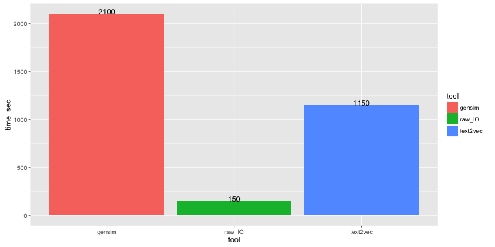
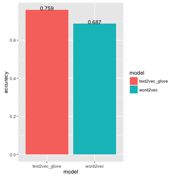
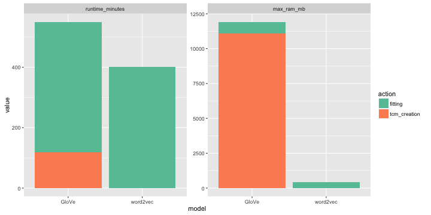
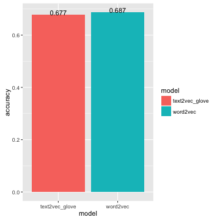
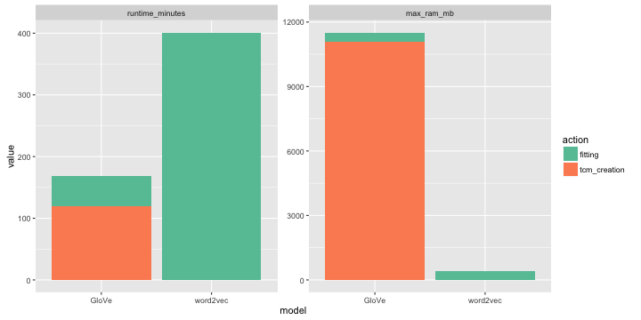

Today I will start to publish series of posts about experiments on english wikipedia. As I said before, text2vec is inspired by gensim - well designed and quite efficient python library for topic modeling and related NLP tasks. Also I found very useful Radim’s posts, where he tried to evaluate some algorithms on english wikipedia dump. This dataset is rather big. For example, dump for 2015-10 (which will be used below) is 12gb bzip2 compressed file. In uncompressed form it takes about 50gb. So I can’t call it a “toy” dataset :-) You can download original files here. We are interested in file which ends with “pages-articles.xml.bz2”.
All evaluation and timings were done on my macbook laptop with intel core i7 cpu and 16gb of ram.
You can find all the code in the post repository.
Preparation
After getting enwiki dump we should clean it - remove wiki xml markup. I didn’t implement this stage in text2vec, so we will use gensim’s scripts - and especially file prepare_shootout.py. It is not very hard to implement it in R, but this is not top priority for me at the moment. So if anybody is willing to help - please see this issue.
After cleaning we will have “title_tokens.txt.gz” file, which represents wikipedia articles - one article per line. Also each line consists of two tab-separated("\t") parts - title of the article and text of the article. Texts consists of space-separated (" ") words in lowercase.
R I/O tricks
R’s base::readLines() is very generic function to read lines of characters from files/connections. And because ot that, readLines() is very slow. So in text2vec I use readr::read_lines() which more then 10x faster. readr is a relatively new package and it has one significant drawback - it doesn’t have streaming API. This means you can’t read file line-by-line - you can only read whole file in a single function call. Sometimes this can become an issue, but usually not - user can manually split big file into chunks using command line tools and work with them. Moreover, if your perform analysis on really large amounts of data, you probably use Apache Spark/Hadoop to prepare input. And usually data is stored in chunks of 64/128Mb in hdfs, so it is very natural to work with such chunks instead of single file.
For this post, I splitted title_tokens.txt.gz into 100mb chunks using split command utility:
gunzip -c title_tokens.txt.gz | split --line-bytes=100m --filter='gzip --fast > ~/Downloads/datasets/$FILE.gz'
If you are on OS X, install coreutils first: brew install coreutils and use gsplit command:
gunzip -c title_tokens.txt.gz | gsplit --line-bytes=100m --filter='gzip --fast > ~/Downloads/datasets/$FILE.gz'
In all the code below we will use title_tokens.txt.gz file as input for gesnim and title_tokens_splits/ directory as input for text2vec.
Word embeddings
Here I want to demonstrate how to use text2vec’s GloVe implementation and briefly compare its performance with word2vec. Originally I had plans to implement word2vec, but after reviewing GloVe paper, I changed my mind. If you still haven’t read it, I strongly recommend to do that.
So, this post has several goals:
- Demonstrate how to process large collections of documents (that don’t fit into RAM) with text2vec.
- Provide tutorial on text2vec GloVe word embeddings functionality.
- Compare text2vec GloVe and gensim word2vec in terms of:
- accuracy
- execution time
- RAM consumption
- Briefly highlight advantages and drawbacks of current implementation. (I’ll write separate post with more details about technical aspects.)
Baseline
Here we will follow excellent Radim’s Making sense of word2vec post and try to replicate his results.
Just to remind results
Warning: package 'ggplot2' was built under R version 3.2.3

You can find corresponding original repository here.
Modifications
I made a few minor modifications in Radim’s code.
- I don’t evaluate
glove-pythonfor the following reasons:- Radim uses dense numpy matrix to store cooccurencies. While it is great for 30K vocabulary (
float32dense matrix occupies ~ 3.6gb and it takes less time to fill it), it is not appropriate for larger vocabularies (for examplefloat32matrix for 100K vocabulary will occupy ~ 40gb). - Orginal glove-python creates sparse cooccurence matrix, but for some reason it has very poor performance (accuracy on analogue task ~1-2%). I’m not very familiar with python, so can’t figure out what is wrong. If somebody can fix this issue - let me know, I would be happy to add glove-python to this comparison.
- Radim uses dense numpy matrix to store cooccurencies. While it is great for 30K vocabulary (
- Construct vocabulary from top 30k words produced by text2vec vocabulary builder. gensim takes into account title of the article, which can contain upper-case words, punctuation, etc. I found that models which are based on vocabulary constructed from only articles body (not incuding title) are more accurate. This is true for both, GloVe and word2vec.
Building the model
I will focus on text2vec details here, because gensim word2vec code is almost the same as in Radim’s post (again - all code you can find in this repo).
Install test2vec from github:
devtools::install_github('dselivanov/text2vec')
Vocabulary
First of all we need to build a vocabulary:
library(text2vec)
# create iterator over files in directory
it <- idir('~/Downloads/datasets/splits/')
# create iterator over tokens
it2 <- itoken(it,
preprocess_function = function(x)
str_split(x, fixed("\t")) %>%
# select only the body of the article
sapply(.subset2, 2),
tokenizer = function(x) str_split(x, fixed(" ")))
vocab <- vocabulary(it2)
On my machine it takes about 1150 sec, while gensim gensim.corpora.Dictionary() takes about 2100 sec. RAW I/O is about ~ 150 sec.

Pruning vocabulary
We received all unique words and corresponding statistics:
str(vocab)
##List of 2
## $ vocab:'data.frame': 8306153 obs. of 4 variables:
## ..$ terms : chr [1:8306153] "bonnerj" "beerworthc" "danielst" "anchaka" ...
## ..$ terms_counts : int [1:8306153] 1 1 1 1 1 1 1 1 1 1 ...
## ..$ doc_counts : int [1:8306153] 1 1 1 1 1 1 1 1 1 1 ...
## ..$ doc_proportions: num [1:8306153] 2.55e-07 2.55e-07 2.55e-07 2.55e-07 2.55e-07 ...
## $ ngram: Named int [1:2] 1 1
## ..- attr(*, "names")= chr [1:2] "ngram_min" "ngram_max"
## - attr(*, "class")= chr "text2vec_vocabulary"
But we are interested in only frequent words, so we should filter out rare words. text2vec provides prune_vocabulary() function which has many useful options for that:
TOKEN_LIMIT = 30000L
# filter out tokens which are represented at least in 30% of documents
TOKEN_DOC_PROPORTION = 0.3
pruned_vocab <- prune_vocabulary(vocabulary = vocab,
doc_proportion_max = TOKEN_DOC_PROPORTION,
max_number_of_terms = TOKEN_LIMIT)
# save to csv to use in gensim word2vec
write.table(x = data.frame("word" = pruned_vocab$vocab$terms, "id" = 0:(TOKEN_LIMIT - 1)),
file = "/path/to/destination/dir/pruned_vocab.csv",
quote = F, sep = ',', row.names = F, col.names = F)
Corpus construction
Now we have vocabulary and can construct term-cooccurence matrix (tcm).
WINDOW = 10L
# create iterator over files in directory
it <- idir('~/Downloads/datasets/splits/')
# create iterator over tokens
it2 <- itoken(it,
preprocess_function = function(x)
str_split(x, fixed("\t")) %>%
# select only the body of the article
sapply(.subset2, 2),
tokenizer = function(x) str_split(x, fixed(" ")))
# create_vocab_corpus can construct documen-term matrix and term-cooccurence matrix simultaneously
# here we are not interesting in documen-term matrix, so set `grow_dtm = FALSE`
corpus <- create_vocab_corpus(it2, vocabulary = pruned_vocab, grow_dtm = FALSE, skip_grams_window = WINDOW)
# in this call, we wrap std::unordered_map into R's dgTMatrix
tcm <- get_tcm(corpus)
Operation above takes about 80 minutes on my machine and at peak consumes about 11gb of RAM.
Short note on memory consumption
At the moment, during corpus construction, text2vec keeps entire term-cooccurence matrix in memory. In future versions it can be changed (Quite easily via simple map-reduce style algorithm. Exactly the same way it done in original Stanford implementation).
As you can see memory consumption is rather high. But if we do some basic calculations we will realize that memory consumption is not so high:
- Internally text2vec stores
tcmasstd::unordered_map<std::pair<uint32_t, uint32_t>, float>. - We store only elements which are above main diagonal, because our matrix is symmetric.
tcmabove consists of ~200e6elements. Matrix is quite dense - ~ 22% non-zero elements (above diagonal! in case of full storage, matrix will be ~ 44% dense).
So, 200e6 * (4 + 4 + 8) = ~ 3.2 gb - only memory to store our matrix in sparse triplet form using preallocated vectors. Also we should add usual 3-4x std::unordered_map overhead and memory allocated for wrapping unordered_map into R sparse triplet dgTMatrix.
GloVe training
We perform GloVe fitting using AdaGrad - stochastic gradient descend with per-feature adaptive learning rate. Also, fitting is done in fully parallel and asynchronous manner ( see Hogwild! paper ), so it can benefit from machines with multiple cores. In my tests I achieved almost 8x speedup on 8 core machine on the discribed above wikipedia dataset.
Now we are ready to train our GloVe model. Here we will perform maximum 20 iterations. Also we will track our global cost and its improvement over iterations. We will stop fitting when improvement (in relation to previous epoch) will become smaller than given threshold - convergence_threshold.
DIM = 600L
X_MAX = 100L
WORKERS = 4L
NUM_ITERS = 20L
CONVERGENCE_THRESHOLD = 0.005
LEARNING_RATE = 0.15
# explicitly set number of threads
RcppParallel::setThreadOptions(numThreads = WORKERS)
fit <- glove(tcm = tcm,
word_vectors_size = DIM,
num_iters = NUM_ITERS,
learning_rate = LEARNING_RATE,
x_max = X_MAX,
shuffle_seed = 42L,
# we will stop if global cost will be reduced less then 0.5% then previous SGD iteration
convergence_threshold = CONVERGENCE_THRESHOLD)
This takes about 431 minutes on my machine and stops on 20 iteration (no early stopping):
2015-12-01 06:37:27 - epoch 20, expected cost 0.0145
Accuracy on analogue dataset is 0.759:
words <- rownames(tcm)
m <- fit$word_vectors$w_i + fit$word_vectors$w_j
rownames(m) <- words
questions_file <- '~/Downloads/datasets/questions-words.txt'
qlst <- prepare_analogue_questions(questions_file, rownames(m))
res <- check_analogue_accuracy(questions_lst = qlst, m_word_vectors = m)
2015-12-01 06:48:23 - capital-common-countries: correct 476 out of 506, accuracy = 0.9407
2015-12-01 06:48:27 - capital-world: correct 2265 out of 2359, accuracy = 0.9602
2015-12-01 06:48:28 - currency: correct 4 out of 86, accuracy = 0.0465
2015-12-01 06:48:31 - city-in-state: correct 1828 out of 2330, accuracy = 0.7845
2015-12-01 06:48:32 - family: correct 272 out of 306, accuracy = 0.8889
2015-12-01 06:48:33 - gram1-adjective-to-adverb: correct 179 out of 650, accuracy = 0.2754
2015-12-01 06:48:33 - gram2-opposite: correct 131 out of 272, accuracy = 0.4816
2015-12-01 06:48:34 - gram3-comparative: correct 806 out of 930, accuracy = 0.8667
2015-12-01 06:48:35 - gram4-superlative: correct 279 out of 506, accuracy = 0.5514
2015-12-01 06:48:37 - gram5-present-participle: correct 445 out of 870, accuracy = 0.5115
2015-12-01 06:48:39 - gram6-nationality-adjective: correct 1364 out of 1371, accuracy = 0.9949
2015-12-01 06:48:41 - gram7-past-tense: correct 836 out of 1406, accuracy = 0.5946
2015-12-01 06:48:42 - gram8-plural: correct 833 out of 1056, accuracy = 0.7888
2015-12-01 06:48:43 - gram9-plural-verbs: correct 341 out of 600, accuracy = 0.5683
2015-12-01 06:48:43 - OVERALL ACCURACY = 0.7593
Note, that sometimes AdaGrad converges to poorer local minima with larger cost. This means model will produce less accurate predictions. For example in some experiments while writing this post I stopped with cost = 0.190 and accuracy = ~ 0.72. Also fitting can be sensitive to initial learning rate, some experiments still needed.
Training word2vec takes 401 minutes and accuracy = 0.687.
As we can see, GloVe shows significantly better accuaracy.

Closer look to resources usage:

Faster training
If you are more interested in training time you can do the following:
Make more zeros in
tcmby removing too rare cooccurences:ind <- tcm@x >= 1 tcm@x <- tcm@x[ind] tcm@i <- tcm@i[ind] tcm@j <- tcm@j[ind]10 iterations with lower word vector dimensions (
DIM = 300for example).
DIM <- 300L
NUM_ITERS <- 10
fit <- glove(tcm = tcm,
word_vectors_size = DIM,
num_iters = NUM_ITERS,
learning_rate = 0.1,
x_max = X_MAX,
shuffle_seed = 42L,
max_cost = 10,
# we will stop if global cost will be reduced less then 1% then previous SGD iteration
convergence_threshold = 0.01)
words <- rownames(tcm)
m <- fit$word_vectors$w_i + fit$word_vectors$w_j
rownames(m) <- words
questions_file <- '~/Downloads/datasets/questions-words.txt'
qlst <- prepare_analogue_questions(questions_file, rownames(m))
res <- check_analogue_accuracy(questions_lst = qlst, m_word_vectors = m)
Training takes 50 minutes on 4-core machine and get ~68% accuracy:
2015-11-30 15:13:51 - capital-common-countries: correct 482 out of 506, accuracy = 0.9526
2015-11-30 15:13:54 - capital-world: correct 2235 out of 2359, accuracy = 0.9474
2015-11-30 15:13:54 - currency: correct 1 out of 86, accuracy = 0.0116
2015-11-30 15:13:57 - city-in-state: correct 1540 out of 2330, accuracy = 0.6609
2015-11-30 15:13:57 - family: correct 247 out of 306, accuracy = 0.8072
2015-11-30 15:13:58 - gram1-adjective-to-adverb: correct 142 out of 650, accuracy = 0.2185
2015-11-30 15:13:58 - gram2-opposite: correct 87 out of 272, accuracy = 0.3199
2015-11-30 15:13:59 - gram3-comparative: correct 663 out of 930, accuracy = 0.7129
2015-11-30 15:14:00 - gram4-superlative: correct 171 out of 506, accuracy = 0.3379
2015-11-30 15:14:01 - gram5-present-participle: correct 421 out of 870, accuracy = 0.4839
2015-11-30 15:14:03 - gram6-nationality-adjective: correct 1340 out of 1371, accuracy = 0.9774
2015-11-30 15:14:04 - gram7-past-tense: correct 608 out of 1406, accuracy = 0.4324
2015-11-30 15:14:06 - gram8-plural: correct 771 out of 1056, accuracy = 0.7301
2015-11-30 15:14:06 - gram9-plural-verbs: correct 266 out of 600, accuracy = 0.4433
2015-11-30 15:14:06 - OVERALL ACCURACY = 0.6774


Summary
Advantages
- As we see text2vec’s GloVe implementation looks like a good alternative to word2vec and outperforms it in terms of accuracy and running time (we can pick a set of parameters on which it will be both faster and more accurate).
- Early stopping. We can stop training when improvements become small.
tcmis reusable. May be it is more fair to subtract timings fortcm_creationfrom benchmarks above.- Incremental fitting. You can easily adjust
tcmwith new data and continue fitting. And it will converge very quickly. - text2vec works on OS X, Linux and even Windows without any tricks/adjustments/manual configuration. Thanks to Intel Thread Building Blocks and RcppParallel. It was a little bit simpler to program AdaGrad using OpenMP (as I actually did in my first attempt), but this leads to issues at installation time, especially on OS X and Windows machines.
Drawbacks and what can be improved
- One drawback - it uses a lot of memory (in contrast to gensim which is very memory-friendly. I was very impressed.). But this is natural - the fastest way to costruct
tcmis to keep it in RAM as hash map and perform cooccurence increments in a global manner. Also note that we buildtcmon top 30000 terms. Because of that it is very dense. I tried to build model on top 100000 terms and had no problems on machine with 32gb RAM. Matrix was much more sparse - ~ 4% of non zero elements. Anyway, one can implement simple map-reduce style algorithm to constructtcm. (using files as it done in original Stanford implemention) and then fit model in streaming manner. - Sometimes model is quite sensitive to initial learning rate.